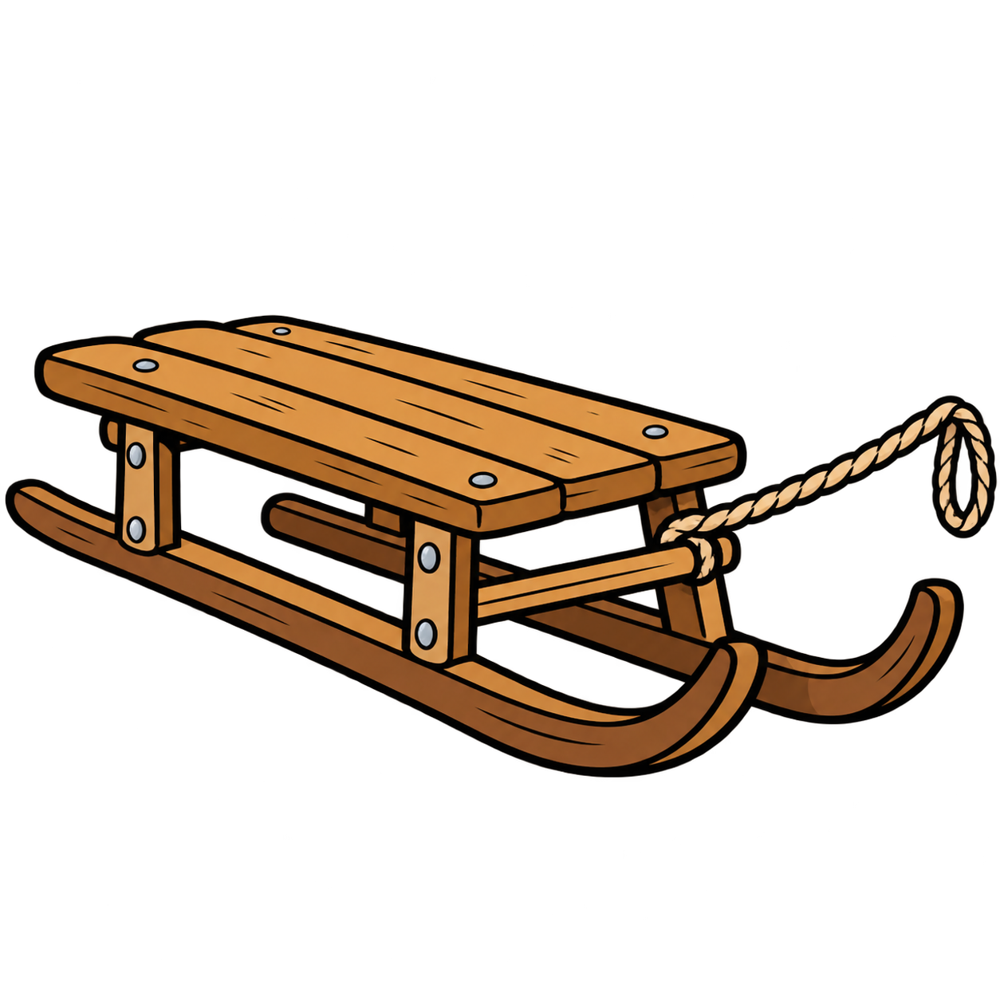

<h2 class="book-page-title" data-book-bind="technology.sleigh.label"></h2>
<p>

La luge s'utilise en hiver pour se deplacer. Elle permet de traverser l'eau gelée et de se déplacer sur la terre enneigée deux fois plus vite que à pied.
</p>
<p>

La construction d'une <span data-book-bind="vehicle.sleigh.label"></span> coûte :

<span data-book-bind="vehicle.sleigh.buildCost.lumber"></span>
</p>
